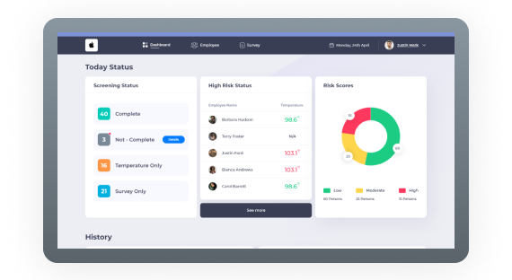
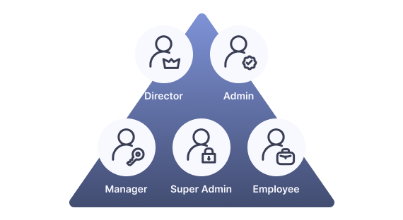
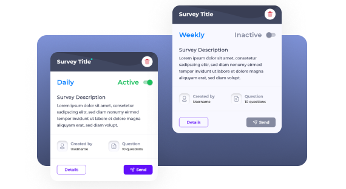
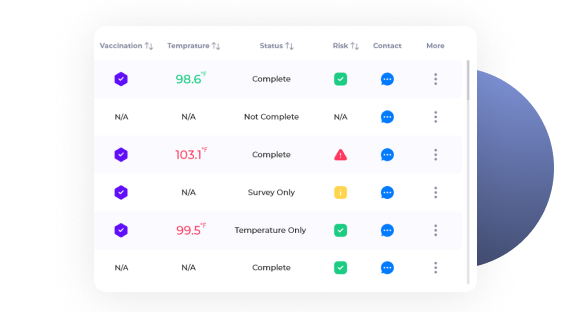
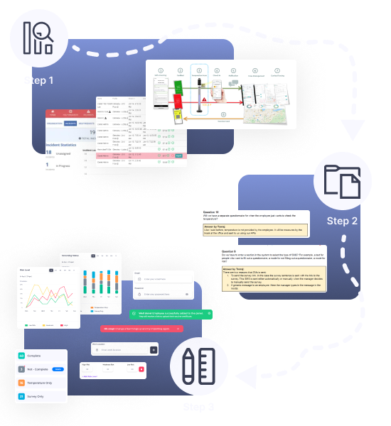
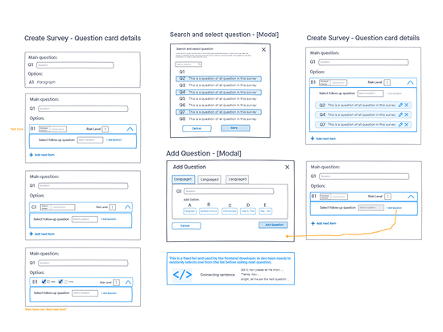
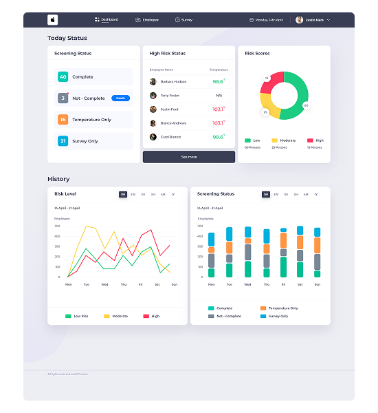
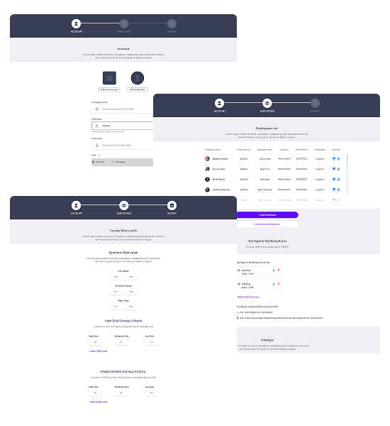
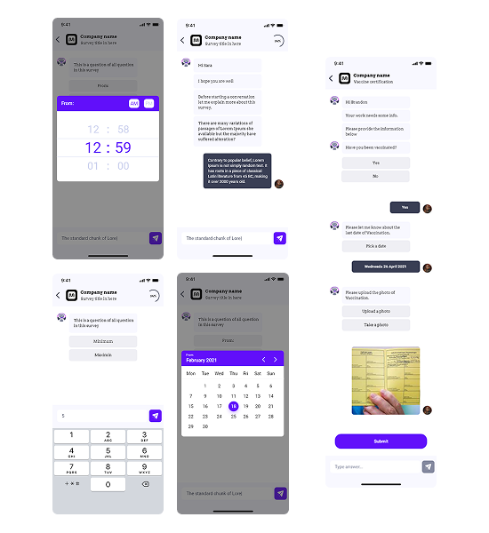
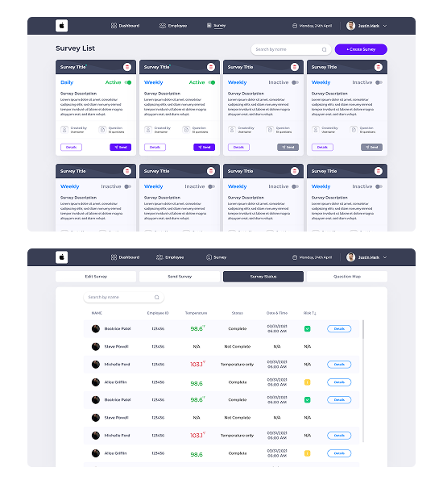

Case Study
CoreView —
Workforce Health
Monitoring
A B2B SaaS platform built for real-time employee health screening and risk control — not HR management. Designed to help managers identify and respond to workforce health risks before they escalate.
Product name changed for confidentiality.

Building CoreView wasn't one hard problem —
it was several interconnected ones.
01Five distinct user roles, one platform
Each role had different access levels, different goals, and a different mental model.
A manager needed risk status at a glance. An employee just needed to answer a daily survey. A director needed to delegate without losing oversight.

02A survey that wasn't a form
The survey system was a conversational chatbot with conditional branching — questions appeared in random order, each answer could trigger a different follow-up. Designing this logic visually, so both the client and the dev team could understand it, was one of the core UX challenges.

03Real-time data, right person, right moment
The dashboard needed to surface real-time screening data alongside risk scores — making sure the right information reached the right person at the right moment.

The real challenge was designing a system where all of these layers worked together without overwhelming any single user.
How I navigated the complexity
The project started with a kickoff meeting with the technical lead and company founder, where the initial brief was shared: a client needed a health screening platform for their workforce. The requirements were high-level — the details had to be discovered through the process.

Understand the market
Before touching any wireframe, our team analyzed six competing platforms — Ceridian, SafetyTek, NetHealth, ProtectWell, Kokomo, and Appian — to understand how others solved similar problems. This research was led by a colleague, and the key insights informed the overall design direction, particularly around dashboard clarity and risk visualization.
Clarify with the client
As requirements evolved, I documented every ambiguity as a formal question to the client — covering user roles, survey logic, SMS behavior, and temperature tracking.
Design iteratively
Rather than designing in isolation, I worked in close collaboration with the UI designer and engineering team — sharing sketches early, collecting client feedback on prototypes, and iterating based on real responses.
Why each decision was made
Why a conversational bot instead of a simple form
A standard form could collect answers — but it couldn't collect them in a way that was flexible enough for the system's logic.
The survey needed conditional branching: each answer could trigger a different follow-up question, displayed in random order to prevent bias. On top of that, the responses needed to feed directly into a risk scoring algorithm that the dashboard would display in real time.
I worked closely with the technical lead through multiple back-and-forth sessions to fully understand this data complexity. The conversational bot wasn't just a UX choice — it was the right structure to capture nuanced, conditional responses that a flat form couldn't handle.
"Employees found the conversational format more engaging and easier to complete."
— Client user feedback
Designing one system for five different mental models
The biggest challenge wasn't building five separate interfaces — it was designing shared screens that behaved differently depending on who was logged in.
To solve this, I mapped each role's needs separately before touching any UI. The key question for every screen was: what does this person need to act on, and what would distract them?
Information hierarchy: from status to action
The dashboard content was defined by the client. My job was deciding how to present it. The core question: what does a manager need to see the moment they open the dashboard?
Immediate snapshot — actionable
Trend analysis — analytical
Reducing onboarding from 7 steps to 3
The initial onboarding flow had 7 separate steps — each on its own screen. While logically complete, it created unnecessary friction. The client flagged this directly: 7 steps felt overwhelming.
By grouping related information into three primary stages, we reduced cognitive load without removing any functionality — organized around what the user was trying to accomplish, not data categories.
The biggest challenge wasn't any single feature — it was the fact that everything was connected.
Alert Settings — each of the 9+ alert types configured independently, with separate routing logic for Directors and Managers.
Designing this required constant back-and-forth with the technical lead to fully understand the dependencies before making any design decisions. A change in one area could ripple through the entire system.
The constraint forced a discipline that ultimately improved the design: every screen had to be understood in the context of the whole system, not in isolation.
Selected screens

Dashboard
Designed around a two-layer hierarchy: immediate action items first, historical trends second. Managers see today's risk status at a glance — no scrolling required.

Onboarding
Simplified from 7 steps to 3 by grouping related configuration tasks. Account, Employees, and Survey — each step represents a complete mental unit, not just a data category.

Survey Bot — Mobile
A conversational chatbot replaced a traditional form to support conditional branching logic. Each answer could trigger a different follow-up question, displayed in random order to reduce bias.

Survey Result on Dashboard
Once employees complete the conversational survey, results are immediately available to managers. Each response is scored and translated into a risk level — Low, Moderate, or High — enabling direct action without manual analysis.
What I'd Do Differently
Looking back, the two areas I would approach differently are the survey logic and the user role architecture.
Both were among the most complex parts of the system — and in hindsight, I moved into wireframing before fully mapping out all the edge cases. The survey's conditional branching logic and the five-role permission structure each deserved a dedicated research and mapping phase before any design work began.
If I were doing this again, I'd spend more time upfront creating a formal information architecture document for the role system and a logic map for the survey branching before touching the UI.
Survey Logic
A dedicated logic map for the conditional branching before any wireframing would have reduced iteration cycles significantly.
User Role Architecture
A formal IA document defining what each role can see, do, and access would have made the dev handoff significantly cleaner.
For systems this complex, time spent on structured research and documentation before designing is never wasted. It reduces iteration cycles and makes the dev handoff significantly cleaner.
Interested in working together?
Download my UX/UI focused resume or schedule a call